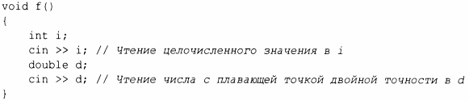
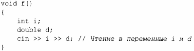
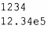
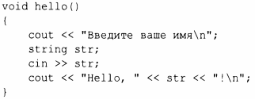
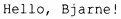
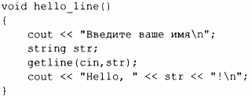
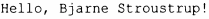

⇐10.2 Вывод 10.4 Состояние ввода-вывода⇒
В заголовочном файле <istream> стандартная библиотека предлагает потоки istream для ввода данных. Как и ostream, istream работают с символьными строковыми представлениями встроенных типов и могут легко быть расширены для работы с пользовательскими типами.
Оператор >> используется в качестве оператора ввода; cin представляет собой стандартный входной поток. Тип правого операнда оператора >> определяет, какие входные данные приемлемы и каков целевой объект ввода. Например:
Этот код читает целое число наподобие 1234 из стандартного ввода в целочисленную переменную i и число с плавающей точкой, такое как 12.34е5, в переменную d типа double.
Подобно операциям вывода, операции ввода могут быть объединены в цепочки, так что приведенный выше код можно записать следующим образом:
В обоих случаях чтение целого числа прерывается любым символом, который не является цифрой. По умолчанию оператор >> пропускает начальные пробельные символы, поэтому приемлемой полной последовательностью ввода будет следующая:
Часто нам требуется считать последовательность символов. Это удобно сделать путем чтения в переменную типа string. Например:
Если вы введете имя Bjarne, то получите вывод
По умолчанию пробельные символы, такие как пробел или символ новой строки, завершают чтение, так что если вы введете имя и фамилию, например Bjarne Stroustrup, то вывод останется прежним:
Прочесть строку полностью можно с помощью функции getline (). Например:
Теперь, если вы введете Bjarne Stroustrup, то получите ожидаемый вывод:
Символ новой строки, завершающий вводимую строку, отбрасывается, и cin готов к вводу очередной строки.
Использование форматированных операций ввода-вывода, как правило, менее подвержено ошибкам, более эффективно и требует меньшего кода, чем работа с символами один за другим. В частности, потоки istream заботятся об управлении памятью и проверке диапазона. Мы можем выполнять форматирование и при работе с памятью с помощью строковых потоков stringstream (§ 10.8).
Стандартные строки обладают прекрасным умением расширяться, чтобы хранить все то, что вы в них записываете; при работе с ними вам не требуется предварительно знать максимальный размер строки. Так что, если вы введете пару мегабайтов точек с запятой, программа вернет вам эти страницы с точками с запятой.